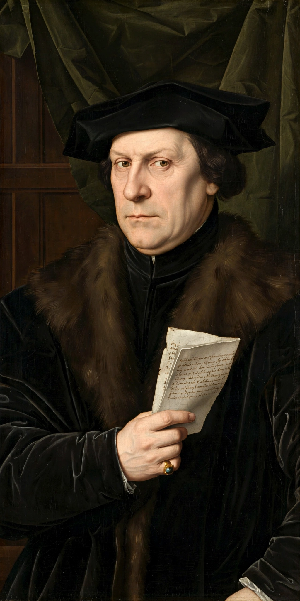

| Thomas Cromwell, 1st Earl of Essex | |
|---|---|
| Born | c. 1485, Putney, London |
| Died | 28 July 1540 (aged ~55), Tower Hill, London |
| Occupation | Lawyer, statesman, chief minister to Henry VIII |
| Offices | Chancellor of the Exchequer; Secretary of State; Lord Privy Seal; Lord Great Chamberlain |
| Spouse | Elizabeth Wyckes (d. 1528) |
| Children | Gregory Cromwell, 1st Baron Cromwell |
Thomas Cromwell, 1st Earl of Essex (c. 1485 – 28 July 1540) was an English lawyer and statesman who served as chief minister to King Henry VIII from 1534 to 1540, when he was beheaded on charges of treason and heresy. A blacksmith's son from Putney, he rose to become the most powerful man in England after the king and the chief architect of the English Reformation.
Cromwell spent much of his youth abroad — serving as a soldier in Italy, working for Florentine bankers and trading in Antwerp — before returning to practise law in London. He entered the service of Cardinal Wolsey, managed much of the cardinal's business, and survived Wolsey's fall in 1529, entering Parliament and the king's favour by proposing that Henry solve his "Great Matter" — the annulment of his marriage to Catherine of Aragon — by asserting royal supremacy over the Church.
As the king's secretary and vicegerent in spirituals, Cromwell drove through the legislation of the Reformation Parliament: the Act in Restraint of Appeals (1533), the Act of Supremacy (1534), the Treasons Act, and the statutes uniting Wales with England and suppressing the monasteries. He organised the Valor Ecclesiasticus survey and the visitations that prepared the Dissolution of the Monasteries (1536–1541), working with the Archbishop of Canterbury, Thomas Cranmer, whom he protected. His administrative reforms — new revenue courts, a more professional privy council, rule through statute — have been called a "Tudor revolution in government" by historian Geoffrey Elton.
Sympathetic to evangelical reform, Cromwell ordered an English Bible in every parish church (the Great Bible of 1539), issued injunctions against pilgrimage and image-veneration, and sheltered reformers. His fall was precipitated by the disastrous marriage he negotiated between Henry and Anne of Cleves (1540), whom the king found unattractive; conservative rivals at court, led by the Duke of Norfolk and Bishop Gardiner, seized the moment. Cromwell was arrested at a council meeting on 10 June 1540, attainted without trial, and executed on Tower Hill on 28 July 1540 — the same day Henry married Catherine Howard. Henry is said later to have lamented the loss of his most faithful servant.
Long portrayed as a ruthless, Machiavellian fixer, Cromwell has been substantially rehabilitated by modern scholarship and by Hilary Mantel's novels Wolf Hall (2009), Bring Up the Bodies (2012) and The Mirror & the Light (2020), which present him as a brilliant, humane self-made man. His portrait by Holbein hangs in the Frick Collection, New York.